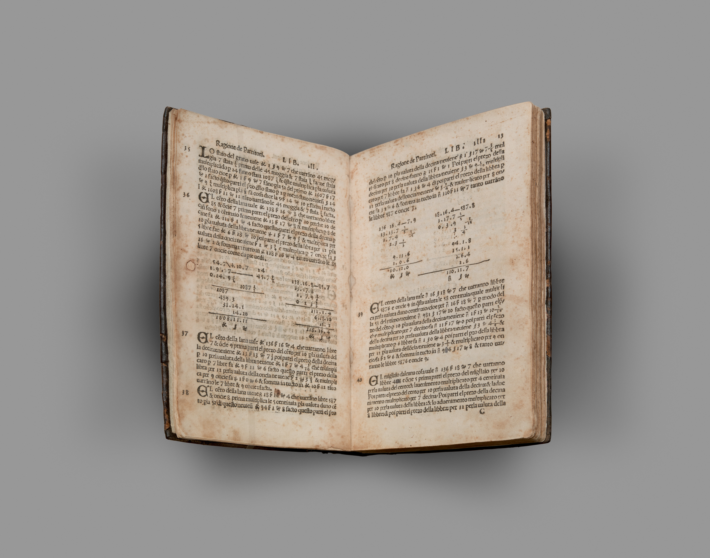

In 1494, in Venice, Luca Pacioli printed the Summa de arithmetica — and inside it, the tract that taught the world double-entry bookkeeping. He wrote it down not because merchants couldn't count, but because they couldn't trust. His rule is one sentence deep: no debit without a credit. Every action gets an equal, opposite, recorded counterpart — and a book that doesn't balance confesses on the spot. Five hundred years of prove it or it didn't happen.
This house is that tract, written again for a new clerk. The merchant's problem hasn't changed; the clerk has. He balanced books for merchants who couldn't watch every clerk. This balances them for owners who can't watch every agent. Same problem, five centuries apart. Same fix.
There are two instruments in this house, and they compose — they do not couple. The first guards every credential on the site whether an agent is involved or not; the second is the one governed door an agent may use. The first is the floor; the second stands on it and submits to it.
No one writes in the books but the appointed hand, and only in the books appointed to them. A Frappe/ERPNext bench app that binds any API credential — an integration, a script, a vendor token, a cron job, an AI agent — to an allowlist of methods and DocTypes, enforced at the credential layer, deny-by-default. No core fork. It governs every credential on the site, agent or not.
bench get-app pacioli_guard <repo-url> bench --site <your-site> install-app pacioli_guard
The clerk may propose; only the merchant disposes. A standalone broker that gives an AI agent a governed way to touch ERPNext through the door of your choosing — MCP or A2A, one spine behind both: PLAN → CONSENT → execute → PROVE, deny-by-default beyond its grants — and its own credential is itself Guard-scoped, a hard precondition, not an optional hardening step.
pip install pacioli
Double entry is not a metaphor here. It is the design. The bookkeeping tract of the Summa organizes a merchant's truth into three books, and slice for slice they are this system. In his journal every entry named its debit with per and its credit with a — nothing moved on one leg.
| fo. | per — his book (1494) | a — here |
|---|---|---|
| 1 | The memorandum (memoriale) — every transaction written down first, roughly, before any formal entry | PLAN — the projected GL and the risk flags, dated, bound to the draft. Nothing posts. |
| 2 | The journal (giornale) — each entry rewritten in fixed form, its debit marked per, its credit marked a | PROVE — the hash-chained receipt book. Intent is the per, outcome the a; an intent with no outcome is a debit with no credit, and the trial balance surfaces it as an orphan. |
| 3 | The ledger (quaderno) — the book of account itself | ERPNext's GL — never written directly; every entry reaches the ledger through the journal's discipline. |
| 4 | An agent wants to write | PLAN — the mirror entry precedes the entry. |
| 5 | A plan exists | CONSENT — a human mints the marker, out of band. Two hands on every posting, never one. |
| 6 | The write fires | PROVE — intent receipt before, outcome receipt after; a write missing its outcome is an orphan. |
| 7 | A posting stands | UNDO — cancel/amend posts equal-and-opposite rows. Nothing erased, everything answered. |
| 8 | A credential exists | Guard — no capability without its explicit grant line. |
Same law at every layer: nothing moves without its counterpart. The one system you can't trust is the one where an action can happen alone — unplanned, unconsented, unreceipted. Everything Pacioli refuses is exactly that: the lone entry.

Two hands on every entry. The clerk writes; the merchant grants. The consent marker is minted outside the agent's reach — no posting on one hand's authority.
The registered book. The books take their authority from a mark held outside the bookkeeper's own hand: the anchor carries the receipt-book's head off the box — a registration the book cannot rewrite, so a truncated or swapped book confesses against it.
Do not go to sleep until the debits equal the credits.
He gave merchants that rule, and it is the operating rule here too: run the trial balance, and if intent and outcome don't pair, the book itself tells you. And the broker refuses to write in a closed book — a closed period, a ruling-off, a frozen date — and never slips a backdated entry past it.
Open no books before the survey. He starts the merchant
with a complete inventory before a single entry. The doctor is that survey for this house —
what is reachable, what is granted, what refuses and why — and the road does not proceed
until the doctor says ready. The census then keeps the inventory honest for
every period after: every finding accounted for, or the book says so out loud.